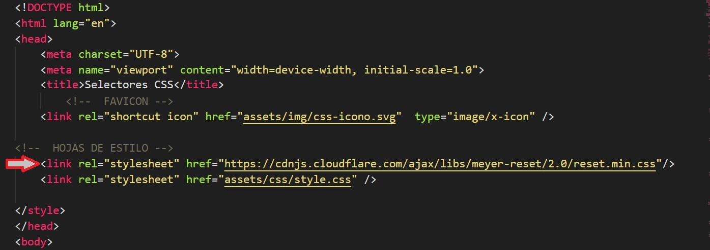

F5
Selectores 2 CSS

Cada navegador tiene por defecto sus propios estilos que aplica a las principales etiquetas.
Por ejemplo: la mayoría de navegadores da márgenes a la etiqueta <body>, o le da un determinado tamaño y margen a la etiqueta <h1>.
Para eliminar estos estilos y que no interfieran con nuestras clases se suelen usar unas hojas de estilos que anulan o “resetean” estos estilos predefinidos.
Podemos incorporar estos archivos de reset a nuestro proyecto mediante un link al archivo externo.
El link al archivo CSS de reset debe estar dentro del head del html y debe ser la primera hoja de estilos que se ha de leer. Los estilos se leen en forma secuencial, por tanto, si estuviera en otra posición, podría eliminar los estilos definidos por las hojas de estilos anteriores.
Ejemplo de link de importación del archivo reset css de Meyer:
Este es el link que carga el archivo de reset css:
<link rel="stylesheet" href="https://cdnjs.cloudflare.com/ajax/libs/meyer-reset/2.0/reset.min.css" />
El archivo con extensión .min, es una versión comprimida que ocupa menos espacio, pues se han eliminado espacios innecesarios, sin perder la funcionalidad.
Diversos desarrolladores han creado archivos de reset para CSS.
| Sistema de reseteo | Descripción |
|---|---|
| Reset CSS | El reset de Eric Meyer, históricamente, quizás el primero. |
| Normalize.css | Uno de los reset más tradicionales y populares. |
| HTML5 Reset Stylesheet | Esta hoja de estilo de Richard Clark, es una modificación de la hoja de estilo de reset de CSS de Eric Meyer, orientada a los elementos HTML 5 modernos |
| A CSS Reset for 2022 | CSS Reset 2022 de Mayank99 |
| Reset CSS Pro | Reset CSS de Eduardo Fierro. |
| CSS Remedy | CSS Remedy, de Jen Simmons. |
| Preflight | Reset CSS de Tailwind CSS. |
| Josh W. Comeau | Un reset moderno, explicado paso a paso.. |
También podemos crear nuestra propia hoja de estilos, reseteando solo las propiedades que nos interese y guardarla en nuestro proyecto. El siguiente podría ser un ejemplo sencillo, que podría estar al inicio de nuestro archivo style.css.
* {
box-sizing: border-box;
margin:0;
padding: 0;
font-family: "Gill Sans", sans-serif;
}
Recuerda que en el caso de que el código de reset se escriba en el archivo style.css siempre debe ir al comienzo del archivo.
Es posible descargar el archivo de reset css e incorporarlo a nuestro proyecto o bien poner el link al archivo externo.
Para encontrar el link al archivo reset, podemos visitar la web del creador y buscar en ella el link al archivo o bien usar un buscador CDN (Content Distribution Net o red de distribución de contenido) para encontrar el link.
Encontrar link con actualizaciones:
https://cdnjs.com/librariesLinks a archivos css reset más utilizados:
En la tabla anterior, los nombres a la izquierda tienen link a cada web correspondiente.
Sitios de referencia:
Se utiliza un pseudo elemento CSS para dar estilos a partes específicas de un elemento.
Al igual que las Pseudo-classes, los pseudo-elementos se añaden a los selectores, pero en cambio, no describen un estado especial, sino que, permiten añadir estilos a una parte concreta del documento. Por ejemplo, el pseudoelemento ::first-line selecciona solo la primera línea del elemento especificado por el selector.
Sintaxis simplificada:
selector::pseudo-elemento { propiedad: valor; }
Muchos navegadores también admiten la sintaxis selector:pseudo-elemento { propiedad: valor; }, pero no se recomienda este uso.
Tipos de pseudo elementos
Existen varios tipos de pseudo elementos, que se encuentran organizados en categorías. Puedes encontrarlos en la siguiente tabla:
| Pseudo elemento | Significado | Más información |
|---|---|---|
| Contenido generado | Información generada desde CSS, sin existir en el HTML. | Ver Contenido generado |
::before, ::after |
||
| Contenido tipográfico | Pseudoelementos relacionados con temas de tipografías. | Ver Tipográfico |
::first-line, ::first-letter |
||
| Contenido destacado | Pseudoelementos para remarcar o destacar información. | Ver Resaltado |
::selection, ::target-text, ::spelling-error, ::grammar-error |
||
| WebComponents | Pseudoelementos relacionados con WebComponents | Ver Slots y Parts |
::part, ::slotted |
||
| View Transition API | Pseudoelementos de transición de cambio de página. | Ver View Transitions |
::view-transition, ::view-transition-group, ::view-transition-image-pair::view-transition-new, ::view-transition-old |
||
| Otros pseudoelementos | Pseudoelementos de otras categorías variadas | (Ver más abajo) |
::marker, ::placeholder, ::file-selector-button |
||
Otros pseudo elementos
Al margen de los pseudo elementos anteriores, explicados en su respectiva sección, nos quedan algunos pseudo elementos sin catalogar.
| Pseudo elemento | Descripción |
|---|---|
::marker |
Aplica estilos a las marcas o símbolos de cada ítem de una lista. |
::backdrop |
Aplica estilos al fondo exterior de un elemento en primer plano (sin que afecte a este). |
::placeholder |
Aplica estilos a los textos de sugerencia de los campos <input>. |
::file-selector-button |
Aplica estilos a los botones de campo <input> de subir archivos. |
::first-line aplica estilos a la primera línea de un párrafo.
Hay toda una serie de propiedades que podremos aplicar:
::first-letter aplica estilos a la primera letra de un párrafo.
Estas son las propiedades que podremos aplicar:
Los pseudoelementos se pueden combinar con clases de HTML.
Se pueden combinar varios pseudo elementos.
::before insertar algún contenido antes de un elemento.
::after insertar algún contenido después de un elemento.
::marker permite dar estilos a marcadores de elementos de listas. Funciona en cualquier elemento o pseudo elemento configurado para display: list-item, como <li> o <summary> .
::marker puede aplicarse a un elemento, pero si no se especifica elemento aplica a todo el documento (li::marker o ::marker).
*El elemento <summary> especifica un resumen, un título o una leyenda para un contenido. Al hacer clic en el elemento, se alterna entre el estado abierto y cerrado del contenido.
También <details> actua como un "toogle" de su contenido.
::marker no afecta a los estilos del icono de <details>.
::selection aplica estilo al elemento seleccionado por el usuario.
Puede aplicarse a un elemento, pero si no se especifica elemento aplica todo el documento (h1::selection o ::selection).
*Se aplica el estilo cuando se hace la selección del texto
A ::selection pueden aplicarse estas propiedades:
::placeholder permite dar formato al texto de referencia que se muestra en un campo de introducción de texto, como <input>> o <textarea>.
Las pseudo clases, junto con los pseudo elementos, permiten aplicar un estilo a un elemento no sólo en relación con el contenido del árbol de documento, sino también en relación a factores externos como el historial del navegador (:visited, por ejemplo), el estado de su contenido (como :checked en algunos elementos de formulario), o la posición del ratón (como :hover que permite saber si el ratón está encima de un elemento o no).
Sintaxis simplificada:
selector:pseudoclase { propiedad: valor; }
Tiene dos puntos antes del nombre de la propiedad.
Hay un gran número de ellas, actualmente unas 46, veamos algunas de las más comunes:
:hover se utiliza para seleccionar y dar estilo al pasar con el ratón por encima de un elemento, y se utiliza normalmente para enlaces, pero puede ser utilizada también para otros elementos.
En el siguiente ejemplo la regla CSS aumentará el tamaño de la imagen un 50% al pasar el ratón sobre ella.
Se ha puesto una transition:0.3s; para que el efecto se suavize
La pseudo clase :link se utiliza para seleccionar y dar estilo a los enlaces que no fueron visitados.
Importante: la pseudo clase :link selecciona solo a los elementos <a> que tienen un atributo href.
La pseudo clase :visited se utiliza para seleccionar y dar estilo a los enlaces que ya fueron visitados.
La pseudo clase :active especifica y selecciona un elemento activo, y se utiliza normalmente para enlaces <a>, pero puede ser utilizada para otros elementos.
Decimos que el elemento es activo cuando el usuario hace clic en este elemento, pero antes de levantar el dedo del botón del ratón: o sea en "mousedown".
A la hora de dar estilo a los enlaces <a>, es importante comprender cómo utilizar las pseudoclases en sus diferentes estados.
Estos son los estados en que puede estar el link:
*Se dice que un enlace tiene el foco cuando se salta a este con la tecla Tab del teclado o se le da el foco mediante programación usando HTMLElement.focus().
*En muchos casos a:focus no se incluye en las reglas aplicadas al link
Para evitar que los estilos se anulan entre si, hay que seguir un orden a la hora de aplicar las pseudo clases.
a:link {
color: green;
}
a:visited {
color: purple;
}
a:hover {
color: gray;
}
a:active {
color: red;
}
Reglas mnemotécnica para aprender el orden de las pseudo clases en el link :
Cuando usamos focus:
Elementos child, filtrados de hijos directos.
Veamos algunas etiqueta:
:first-child — selecciona solo el primer hijo.
:last-child — selecciona solo el último hijo.
:nth-child(n) — selecciona el n-ésimo hijo (contando desde el inicio).
:nth-last-child(n) — selecciona el n-ésimo hijo contando desde el final.
:only-child — Selecciona elementos que son el único hijo de su contenedor, no tiene hermanos.
:only-of-type — Selecciona elementos que son el único de su tipo en el contenedor.
:nth-of-type(n) — Selecciona el n-ésimo hijo de un tipo específico en el contenedor.
:nth-last-of-type(n) — Selecciona el n-ésimo hijo de un tipo específico desde el final.
:first-of-type — Selecciona el primer hijo de su tipo en el contenedor.
:last-of-type — Selecciona el último hijo de su tipo en el contenedor.
La regla@import permite importar una hoja de estilo en otra hoja de estilo.
@import debe estar en la parte superior de la hoja de estilo. Estas reglas deben preceder a todos los otros tipos de reglas, excepto a las reglas @charset.
@charset "utf-8";
@import url(ruta/estilos.css);
El url a utilizar puede aparecer dentro de una anotación funcional url(), o sencilla-mente entre comillas:
@import url(ruta/estilos.css);
@import 'ruta/estilos.css';
@import url("menu.css");- Fichero en la misma ruta.
@import url("menu/sidebar.css");- Ruta relativa, dentro de menú/
@import "https://manz.dev/index.css"; - Ruta absoluta, URL completa.
Tampoco puede ser utilizada dentro de un bloque @media, aunque sí es posible importar una hoja de estilos externa para ser utilizada con un cierto tipo de media.
@import url(estilos/print.css) print;
@media print {
/* las reglas CSS van aquí */
}
Carga la hoja de estilos custom.css
@import "custom.css";
@import url("custom.css");
Importa la hoja de estilo "mobstyle.css" sólo si el medio es pantalla y la ventana gráfica tiene un máximo de 768 píxeles.
@import "mobstyle.css" screen and (max-width: 768px);
Esta regla asegura que los estilos en common.css solo se apliquen en dispositivos de pantalla, como monitores, teléfonos, y tablets.
@import "common.css" screen;
Esta sólo se cargará cuando la pantalla está en modo horizontal (landscape).
@import url('landscape.css') screen and (orientation:landscape);
Importar estilos de fuentes de texto
@import url(https://fonts.googleapis.com/css?family=Raleway:400);
@import url("https://fonts.googleapis.com/css?family=Raleway:400");
@import 'https://fonts.googleapis.com/css?family=Raleway:400';
Importa la hoja de estilos cuando el dispositivo de salida es un proyector o una tv.
@import url("bluish.css") projection, tv;
Importa la hoja de estilos cuando el dispositivo de salida es una pantalla o un proyector.
@import "common.css" screen, projection;
Carga una hoja de estilo desde una ruta interna de navegador (poco común).
@import url("chrome://communicator/skin/");
La declaración @import puede tener un efecto negativo en el rendimiento de la página. Por el tiempo que conlleva la carga de estos archivos.